Збалансоване & здорове Харчування вдома
Що таке здорове харчування?
- Різноманітність
- Регулярне
- Натуральне
- Помірність
- Баланс
- Смак
-
Білки
- Зростання та регенерація м'язів
- Синтез антитіл
- Є джерелом амінокислот
- Сприяють насиченню
-
Вітаміни
- Зміцнюють імунітет
- Підтримують засвоєння кальцію
- Захищають клітини від вільних радикалів
-
Вуглеводи
- Тривала енергія
- Нормалізують перистальтику
- Допомагають регулювати вагу
- Сприяють насиченню
-
Жири
- Зростання клітин та загоєння ран
- Покращують всмоктування вітамінів
- Є джерелом амінокислот
- Знижує запалення, підтримують здоров'я шкіри
Скоріше підпишись
Оформи передплату прямо зараз і відкрий доступ до більш ніж 100 ексклюзивних рецептів, які недоступні на безкоштовному тарифі!
Відкрий для себе нові уподобання, кулінарні техніки та натхнення для кожного дня.
- 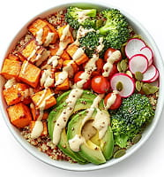
- 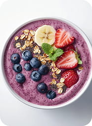
- 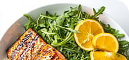
- 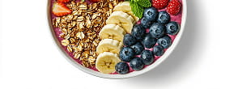
- 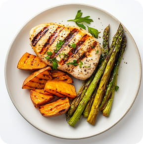
- 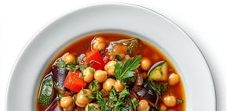
- 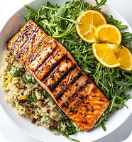
- 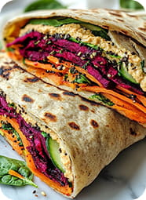

- 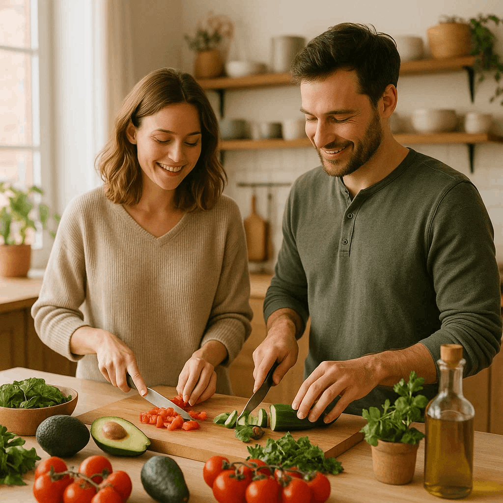
- 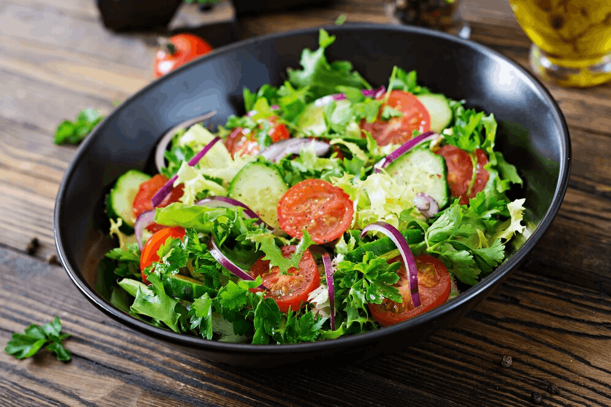

Прості поради для старту
Почати шлях до здорового харчування можна з найпростіших кроків. Намагайтеся замінити солодкі напої чистою водою і додати в раціон більше овочів та фруктів. їжте повільніше і прислухайтеся до почуття насичення - це допомагає уникнути переїдання.
Плануйте прийоми їжі заздалегідь, щоб рідше вдаватися до фастфуду. Намагайтеся готувати вдома - так ви точно знатимете, що саме їсте. Головне — рухатися поступово і не прагнути ідеалу відразу.
- Плануйте прийоми їжі заздалегідь
- Пийте достатньо води
- Дотримуйтесь режиму харчування
- Обмежте доданий цукор
- Додайте овочі та фрукти в кожен прийом їжі
Починай прямо зараз
Смачні та корисні рецепти на коден день
-
Сніданки
-
Обіди
-
Вечері
-
Смузі
Індивідуальний підхід: Онлайн-підтримка тренера
-
Підтримка спільноти однодумців
Ви стаєте частиною закритого клубу, де кожен поділяє ваші цілі. Спілкуйтесь, діліться успіхами, отримуйте поради та знаходите мотивацію.
-
Економія часу
Програма та матеріали структуровані так, щоб ви отримували максимум користі за короткий час.
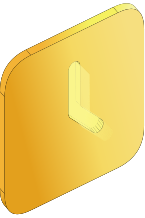 -
Формування стійких здорових звичок
Невеликі кроки ведуть до великих змін. Відкрийте для себе прості та ефективні методи.
-
Доступ до бази знань
Отримайте доступ до перевіреної інформації: статей, відеоуроків та тренувань від експертів.
-
Поліпшення загального самопочуття
Наша програма націлена як на зовнішні зміни, так і на повне оздоровлення організму.
-
Доступно з платною підпискою «Оптимальний» та вище
Почни харчуватися правильно
Встигни забрати чек-лист
Залиште свою адресу електронної пошти та почніть отримувати корисні поради щодо правильного харчування прямо на пошту – абсолютно безкоштовно!
На вас чекають прості рекомендації, смачні ідеї та перевірені лайфхаки для здорового способу життя.
- Здоров'я
- Сила
- План
- Енергія
- Легкість
- Результат
- Старт
-
Базовий
1299 грн
- Персональне тижневе меню
- Списки покупок на кожен день
- Підтримка по e-mail
- Поради щодо заміни продуктів
- Доступ до всіх рецептів
- 2 онлайн-розбору харчування в місяць
- Індивідуальний план харчування з урахуванням аналізу раціону та здоров'я
- Чек-листи для мотивації та контролю прогресу
- Запрошення на закриті вебінари та онлайн-кулінарні майстер-класи
-
Преміум
2449 грн
3449 грн
- Персональне тижневе меню
- Списки покупок на кожен день
- Підтримка по e-mail
- Поради щодо заміни продуктів
- Доступ до всіх рецептів
- 2 онлайн-розбору харчування в місяць
- Індивідуальний план харчування з урахуванням аналізу раціону та здоров'я
- Чек-листи для мотивації та контролю прогресу
- Запрошення на закриті вебінари та онлайн-кулінарні майстер-класи
-
Оптимальний
1999 грн
- Персональне тижневе меню
- Списки покупок на кожен день
- Підтримка по e-mail
- Поради щодо заміни продуктів
- Доступ до всіх рецептів
- 2 онлайн-розбору харчування в місяць
- Індивідуальний план харчування з урахуванням аналізу раціону та здоров'я
- Чек-листи для мотивації та контролю прогресу
- Запрошення на закриті вебінари та онлайн-кулінарні майстер-класи